Atangoについてのご質問にお答えします。
Answers to common questions about Atango.
無料版では、フラッシュカードの閲覧、間隔反復による暗記、スキャン、カスタム単語帳の作成、辞書検索など、すべての機能をご利用いただけます。
英検3級以下（5級・4級・3級）の単語が無料で利用できます。
The free version gives you full access to all app features — flashcard browsing, spaced repetition memorization, scanning, custom deck creation, and dictionary search.
Words from Eiken Grade 3 and below (Grades 5, 4, and 3) are available for free.
プレミアムでは、10万語以上のアプリ内辞書のすべての語句がアンロックされます。すべての英検級、すべてのテーマデッキ、辞書検索の全結果が利用可能になります。
買い切りの1回払いです。サブスクリプションではありません。一度購入すれば、ずっとご利用いただけます。
Premium unlocks the entire built-in dictionary of over 100,000 words and phrases. This includes all Eiken grades, all theme decks, and the full dictionary search results.
It is a one-time purchase — not a subscription. You pay once and keep access forever.
返金はAppleが受け付けています。reportaproblem.apple.com にアクセスして、購入に対する返金リクエストを送信してください。
Refunds are handled by Apple. Visit reportaproblem.apple.com to submit a refund request for your purchase.
はい。スキャン機能（カメラ、写真、テキスト入力）を使うか、辞書検索の結果から単語を追加してカスタム単語帳を作成できます。カスタム単語帳には好きな名前、アイコン、色を設定できます。
Yes. You can create custom decks using the Scan feature (camera, photos, or text input) or by adding words from dictionary search results. Custom decks can be given a name, icon, and color of your choice.
スキャン機能は3つの方法で英単語を検出します。
認識された単語は辞書と照合され、カスタム単語帳に追加できます。
The Scan feature detects English words from three sources:
Recognized words are matched against the dictionary, and you can add them to your custom decks.
カスタム単語帳と単語帳の学習設定は、同じApple Accountでサインインしたデバイス間でiCloud経由で同期されます。暗記の進捗（FSRSの復習履歴）は各デバイスにローカル保存されます。
Custom decks and deck study settings are synced via iCloud across your devices signed in with the same Apple Account. Memorization progress (FSRS review history) is stored locally on each device.
このアプリはiOSの読み上げ機能を使用しています。プレミアムまたは拡張音声が必要ですが、初期状態ではインストールされていません。
ダウンロード手順：
音声をインストール後、フラッシュカードや単語詳細画面のスピーカーアイコンをタップすると発音が再生されます。
This app uses iOS's built-in text-to-speech engine. Premium or Enhanced voices are required, but they are not installed by default.
To download them:
Once a voice is installed, tap the speaker icon on a flashcard or word detail screen to hear the pronunciation.
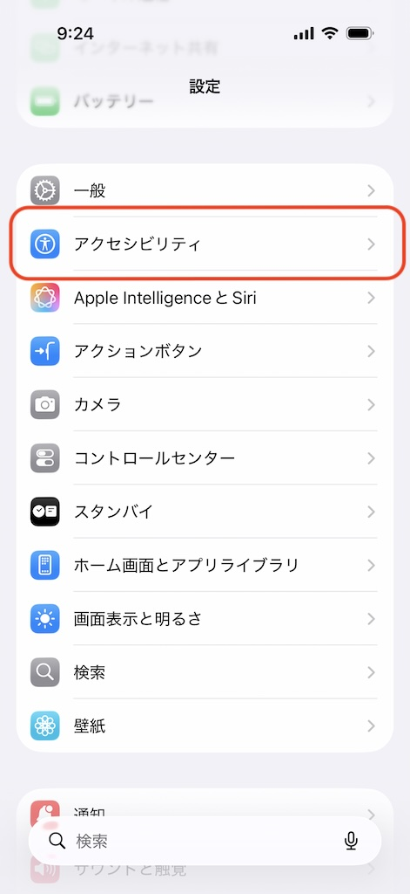
アクセシビリティ">② アクセシビリティ
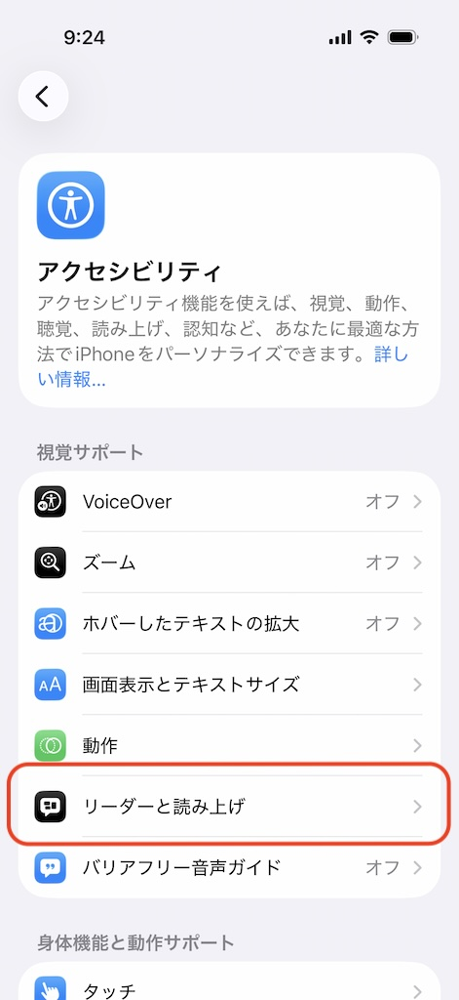
③ リーダーと読み上げ
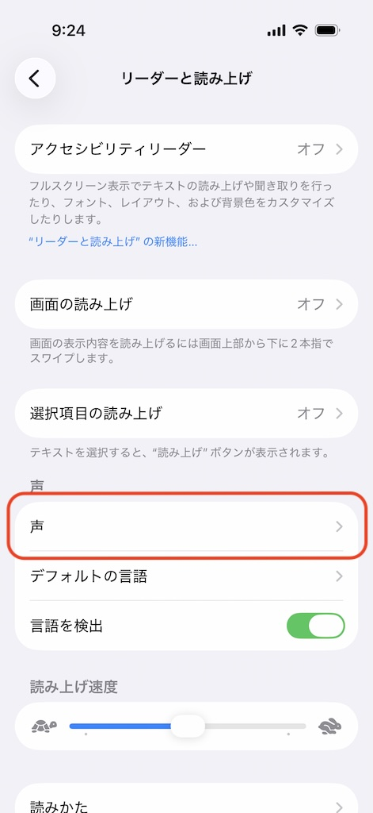
④ 声
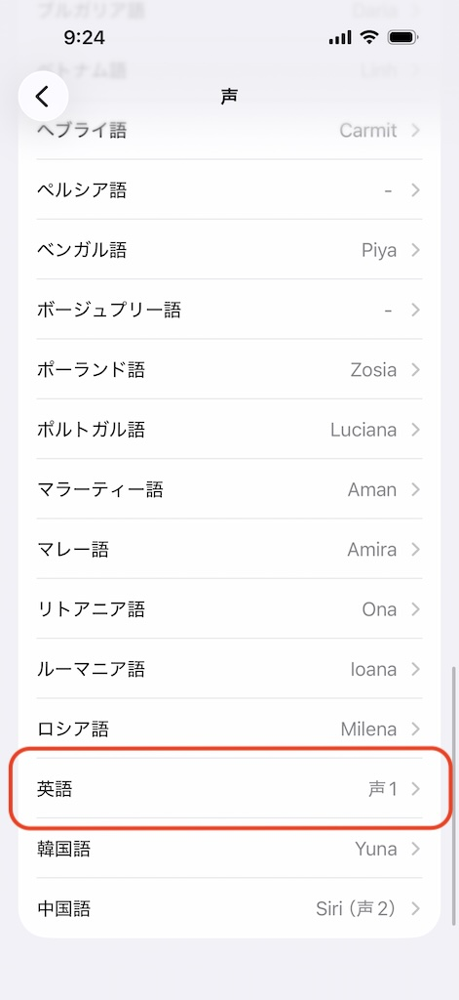
⑤ 英語を選択
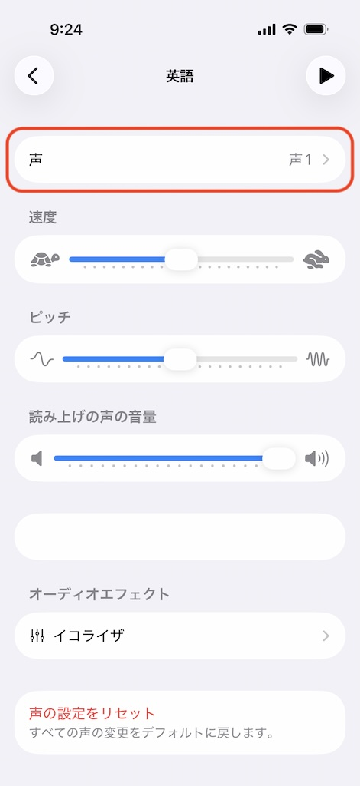
⑥ 声
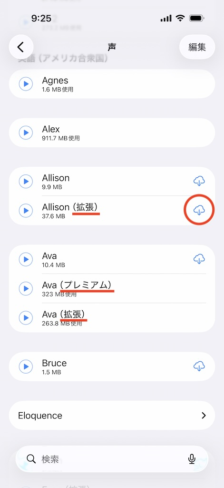
⑦ ダウンロード
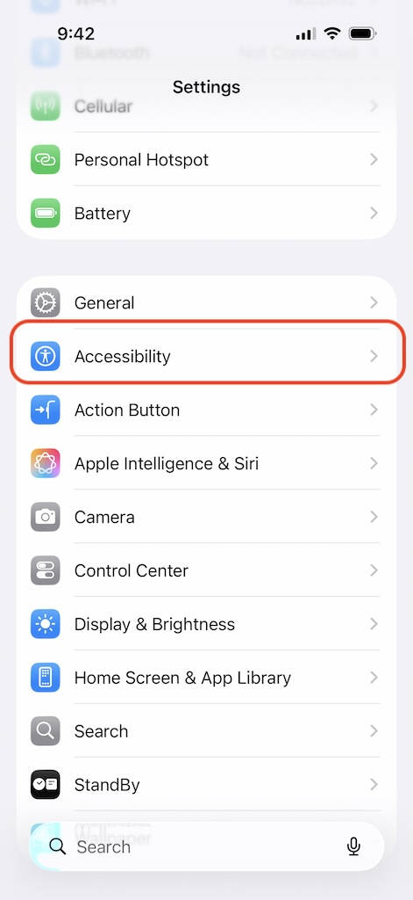
Accessibility">② Accessibility
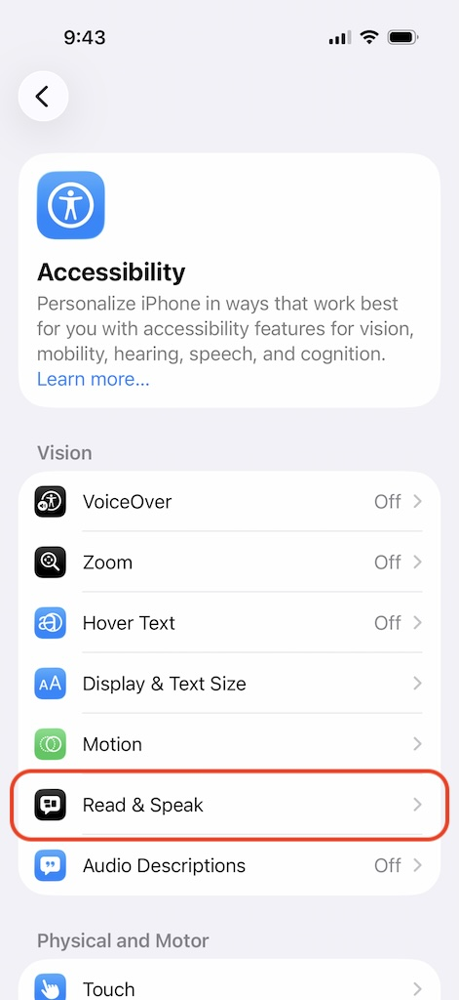
③ Read & Speak
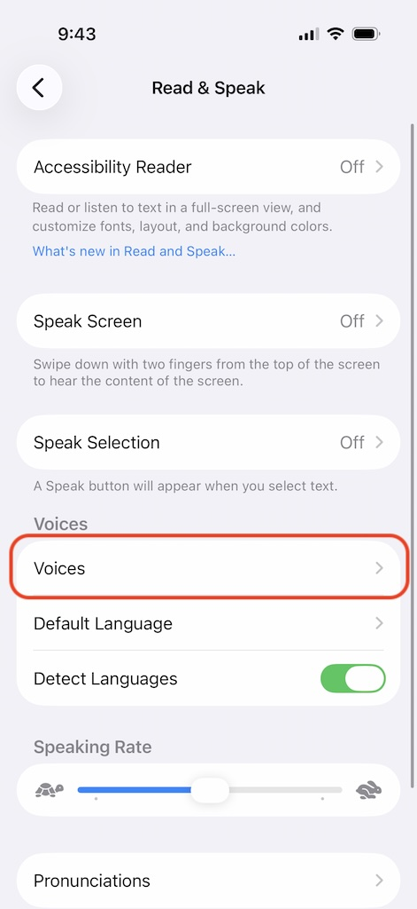
④ Voices
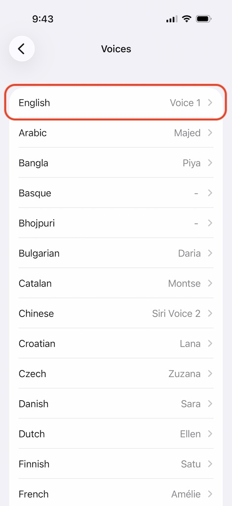
⑤ English
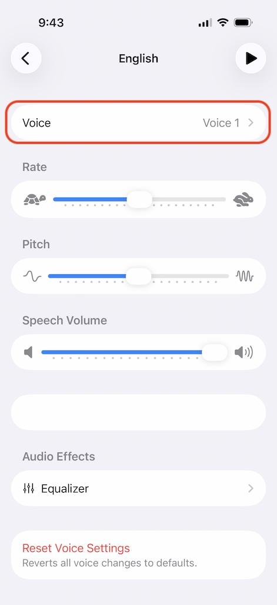
⑥ Voice
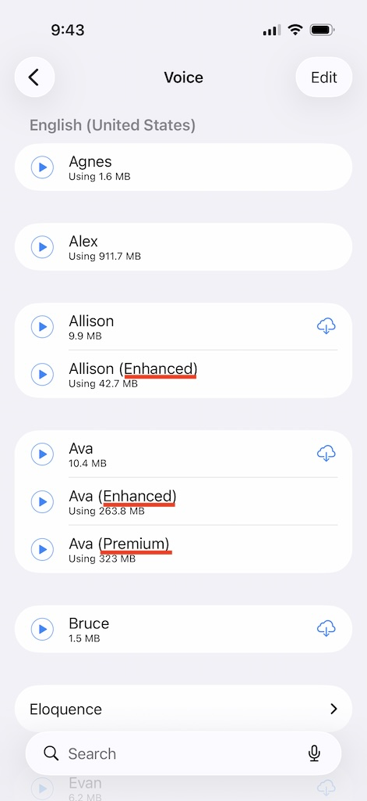
⑦ Download
はい。設定 > 発音 で利用可能な音声の選択や、読み上げ速度・音量の調整ができます。
このアプリではプレミアムまたは拡張音声が必要ですが、初期状態ではインストールされていません。ダウンロードするには、設定アプリ > アクセシビリティ > リーダーと読み上げ > 声 > 英語 > 声 に進み、拡張またはプレミアムと表示されている音声をダウンロードしてください。
Yes. Go to Settings > Pronunciation to select from available voices and adjust the speaking speed and volume.
This app requires premium or enhanced voices, which are not installed by default. To download them, open the iPhone Settings app and go to Accessibility > Read & Speak > Voices > English > Voice, then download any voice marked as Enhanced or Premium.
アクセシビリティ
リーダーと読み上げ
声
英語を選択
声
ダウンロード
Accessibility
Read & Speak
Voices
English
Voice
Download